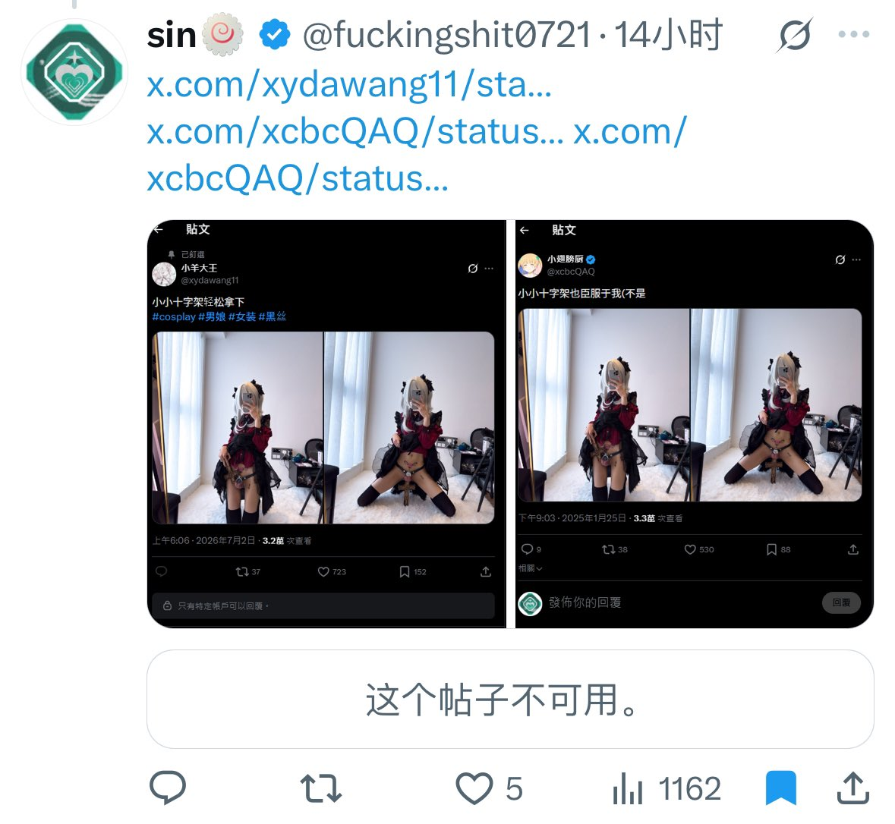
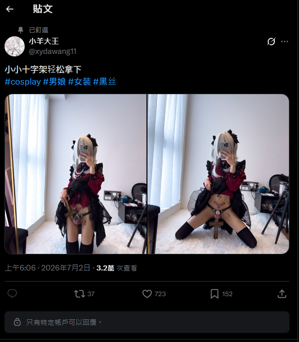
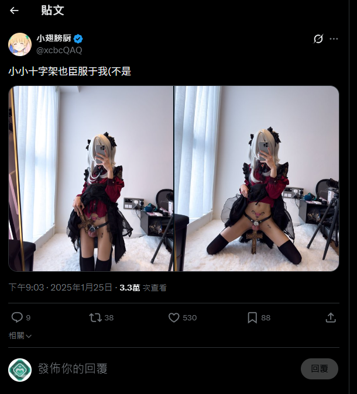

🤯凌月月🤯🤍
@PsycheRabbiiOwO
@Paramjitt 昨天置顶还是这个。大概是想起号吧



sin🍥
@fuckingshit0721
@xydawang11 @1999shiroko @0xJoveXu @xcbcQAQ https://t.co/BfBCReMekr
https://t.co/y17H8OG3rQ https://t.co/m0qHu3P4Ww
霖🍥🏳️⚧️（16.0寻回爱妻）
@Paramjitt
0721到底是谁。 https://t.co/JmKEQazkgH